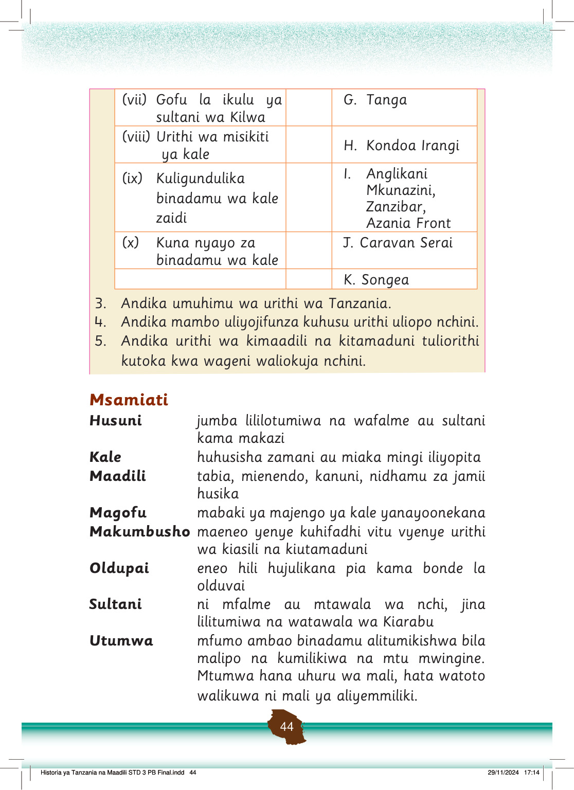

Andika umuhimu wa urithi wa Tanzania.
3.
4.
Andika mambo uliyojifunza kuhusu urithi uliopo nchini.
5.
Andika urithi wa kimaadili na kitamaduni tuliorithi kutoka kwa wageni waliokuja nchini.
(vii) Gofu la ikulu ya sultani wa Kilwa
G. Tanga
(viii) Urithi wa misikiti ya kale
H. Kondoa Irangi
(ix) Kuligundulika binadamu wa kale zaidi
I. Anglikani Mkunazini, Zanzibar, Azania Front
(x) Kuna nyayo za binadamu wa kale
J. Caravan Serai
K. Songea
Msamiati
Husuni
jumba lililotumiwa na wafalme au sultani kama makazi
Kale
huhusisha zamani au miaka mingi iliyopita
Maadili
tabia, mienendo, kanuni, nidhamu za jamii husika
Magofu
mabaki ya majengo ya kale yanayoonekana
Makumbusho
maeneo yenye kuhifadhi vitu vyenye urithi wa kiasili na kiutamaduni
Oldupai
eneo hili hujulikana pia kama bonde la olduvai
Sultani
ni mfalme au mtawala wa nchi, jina lilitumiwa na watawala wa Kiarabu
Utumwa
mfumo ambao binadamu alitumikishwa bila malipo na kumilikiwa na mtu mwingine.
Mtumwa hana uhuru wa mali, hata watoto walikuwa ni mali ya aliyemmiliki.